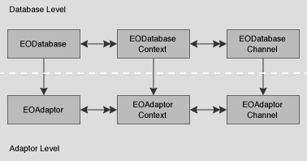
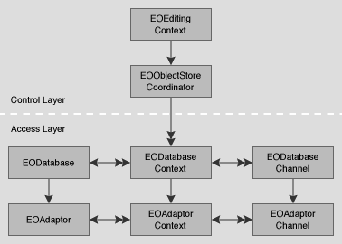

Each of an EODatabase's EODatabaseContexts forms a separate transaction scope, and is in effect a separate logical user to the server. An EODatabaseContext uses one or more pairs of EODatabaseChannel and EOAdaptorChannel objects to manage data operations (insert, update, delete, and fetch). Adaptors may support a limited number of contexts per database or channels per context, but an application is guaranteed at least one of each.
The EODatabase, EODatabaseContext, and EODatabaseChannel classes form the database level of the Enterprise Objects Framework. The database level is a client of the adaptor level, which is defined by the adaptor classes: EOAdaptor, EOAdaptorContext, and EOAdaptorChannel. Together, the database and adaptor levels make up the access layer of the Enterprise Objects Framework.

Figure 2 The Access Layer The database level acts as an intermediary between the adaptor level and the control layer, which includes an EOObjectStoreCoordinator and an EOEditingContext (Figure 3). The control layer operates in terms of enterprise objects, while the adaptor level operates in terms of database rows packaged as NSDictionaries. It's the job of the database level to perform the necessary object-to-relational translation between the two.
There's little need for your code to interact directly with an EODatabase object. An EOEditingContext creates its own database level objects, which create their own corresponding adaptor level objects. Once the network of objects is in place, your code might interact with an EODatabase to access its corresponding EOAdaptor object, but additional programmatic interaction is usually unnecessary.

Figure 3 The EODatabase Level as an Intermediary Between the Adaptor Level and the Control Layer
Snapshots
EODatabase's most significant responsibility is to record snapshots for its EODatabaseContexts. A snapshot is a dictionary whose keys are attribute names and whose values are the corresponding, last-known database values. Enterprise Objects Framework records snapshots as it successfully fetches, inserts and updates enterprise objects. Snapshot information is used when changes to enterprise objects are saved back out to the database to ensure that row data has not been changed by someone else since it was last recorded by the application.
A snapshot contains entries for a row's primary key, class properties, foreign keys for class property relationships, and attributes used for locking. They are recorded under the globalIDs of their enterprise objects. (EOGlobalIDs are based on an object's primary key and its associated entity; see the class specification for EOGlobalID in the EOControl framework for more information.)
EODatabase also records snapshots for to-many relationships. These snapshots consist of an NSDictionary of NSDictionaries, in which the top-level dictionary has as its key the globaID of the enterprise object for which to-many relationships are being recorded. The key's value is a dictionary whose keys are the names of the enterprise object's to-many relationships. Each of these keys in turn has as its value an array of globalIDs that identify the objects at the destination of the relationship.
The snapshots made by an EODatabase form the global view of data for nearly every other part of the application, representing the current view of data in the server as far as the application is concerned (though other applications may have made changes). This global view is temporarily overridden locally by EODatabaseContexts, which form their own snapshots as they make changes during a transaction. When an EODatabaseContext commits its top-level transaction, it reconciles all changed snapshots with the global view of the database object, so that other database contexts (except those with open transactions) immediately use the new snapshots as well. EODatabaseContexts automatically use their EODatabase to record snapshots, so there's no need for your application to intervene in an EODatabase's snapshotting mechanism.
For more information on snapshots and how they relate to an application's update strategy, see the EODatabaseContext class specification.
Result Cache
An EODatabase object also performs the function of caching enterprise objects for entities that cache their objects (see the EOEntity class specification). An EODatabase's result cache stores the globalIDs of enterprise objects for entities that cache their objects. The first time you perform a fetch against such an entity, all of its objects are fetched, regardless of the fetch specification used. The globalIDs of the resulting objects are stored in the EODatabase's result cache by entity name. Whenever possible, subsequent fetches are performed against the cache (in memory) rather than against the database. With a globalID, Enterprise Objects Framework can look up the values for the corresponding object in its snapshot using EODatabase's or EODatabaseContext's snapshotForGlobalID: method.
As an example, suppose that you have an entity named Rating that contains all the valid ratings for Movies (G, PG, R, and so on). Rather than store a Movie's rating directly in the Movie as an attribute, Movie maintains a relationship to a Rating. To specify a rating for a movie, users select the rating from a pop-up list of the possible values. This Rating entity should cache its objects. The values that populate the rating pop-up list are only fetched once, and there's no need to fetch them again; the relationships between Movies and Ratings can be maintained without subsequent fetches.
The result cache is managed automatically; you shouldn't have to manipulate it explicitly. However, if you need to access or alter the cache, EODatabase provides several methods for interacting with it.